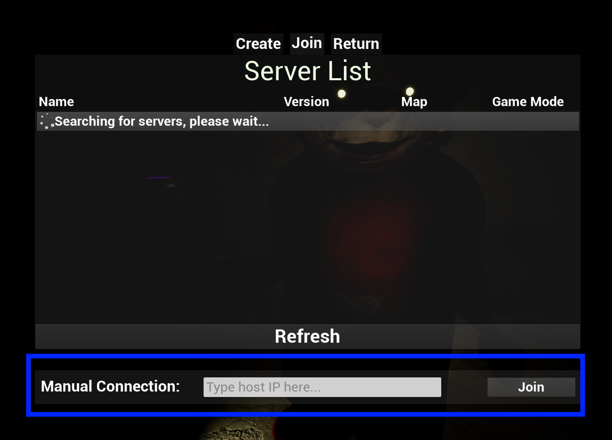

How can I play SlenderTubbies online?
This document will help you with hosting and joining Multiplayer games. It will also show you how to manage connected players.
First, let's talk about how to host or join a server.
Before we start, make sure that:
- You are in the same network as you friend. (If LAN)
- You are logged in to Epic Games.
- You have allowed the game to bypass Windows FireWall.
- You have disabled host isolation in your router/switch settings (in most cases this is default).
- You are using the same game version.
Press the Join button at the top of the menu and wait for your server to appear on the Server List.
Troubleshooting Connection.
-
You can connect to an existing server by typing the Server IP.
To get your Server IP, check the Pause Menu by pressing 'Esc' in-game.
-
Joining through Server IP
Press 'Esc' to find your Server IP ((t should be visible under the word "Pause").
In the Join Menu, enter the Server IP into "Manual Connection" at the bottom of the screen.
Finally, press "Join"
Ta-Dah! ^^
If you still can't play with your friends, feel free to contact me on the Misiu Games Studio Discord server.
Bare in mind that I'm not active 24/7. Thank you. :)
-